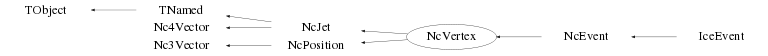

class NcVertex: public NcJet, public NcPosition
Class NcVertex Creation and investigation of an NcVertex. An NcVertex can be constructed by adding NcTracks and/or NcJets. Note : Also (secondary) vertices can be added to a vertex. To provide maximal flexibility to the user, two modes of vertex storage are provided by means of the memberfunction SetVertexCopy(). The same holds for the storage of jets via SetJetCopy(). a) SetVertexCopy(0) (which is the default). Only the pointers of the 'added' vertices are stored. This mode is typically used by making vertex studies based on a fixed list of vertices which stays under user control or is contained for instance in an NcEvent. In this way the NcVertex just represents a 'logical structure' for the physics analysis which can be embedded in e.g. an NcEvent or NcVertex. Note : Modifications made to the original vertices also affect the NcVertex objects which are stored. b) SetVertexCopy(1). Of every 'added' vertex a private copy will be made of which the pointer will be stored. In this way the NcVertex represents an entity on its own and modifications made to the original vertices do not affect the NcVertex objects which are stored. This mode will allow 'adding' many different NcVertex objects by creating only one NcVertex instance in the main programme and using the NcVertex::Reset, NcVertex::AddTrack and parameter setting memberfunctions. See also the documentation provided for the memberfunction SetOwner(). Coding example to make 3 vertices v1, v2 and v3. v1 contains the tracks 1,2,3 and 4 v2 contains many different tracks v3 contains the jets 1 and 2 NcTrack t1,t2,t3,t4; ... // code to fill the track data NcJet j1,j2; ... // code to fill the jet data NcVertex v1; v1.SetVertexCopy(1); v1.AddTrack(t1); v1.AddTrack(t2); v1.AddTrack(t3); v1.AddTrack(t4); Float_t r1[3]={2.4,0.1,-8.5}; v1.SetPosition(r1,"car"); NcVertex v2; v2.SetTrackCopy(1); NcTrack* tx=new NcTrack(); for (Int_t i=0; i<10; i++) { ... // code to fill the track data v2.AddTrack(tx); tx->Reset(); } Float_t r2[3]={1.6,-3.2,5.7}; v2.SetPosition(r2,"car"); NcVertex v3; v3.AddJet(j1); v3.AddJet(j2); Float_t r3[3]={6.2,4.8,1.3}; v3.SetPosition(r3,"car"); v1.Data("sph"); v2.ListAll(); v3.List("cyl"); Float_t e1=v1.GetEnergy(); Nc3Vector p1=v1.Get3Momentum(); Float_t loc[3]; v1.GetPosition(loc,"sph"); NcPosition r=v2.GetPosition(); r.Data(); Int_t nt=v2.GetNtracks(); NcTrack* tv=v2.GetTrack(1); // Access track number 1 of Vertex v2 Specify the vertices v2 and v3 as secondary vertices of v1 v1.AddVertex(v2); v1.AddVertex(v3); v1.List(); Int_t nv=v1.GetNvtx(); NcVertex* vx=v1.GetVertex(1); // Access 1st secondary vertex of v1 Float_t e=vx->GetEnergy(); Float_t M=v1.GetInvmass(); Reconstruct Vertex v1 from scratch v1.Reset(); v1.SetNvmax(25); // Increase initial no. of sec. vertices v1.AddTrack(t3); v1.AddTrack(t4); v1.AddJet(j2); Float_t pos[3]={7,9,4}; v1.SetPosition(pos,"car"); Note : By default all quantities are in meter, GeV, GeV/c or GeV/c**2 but the user can indicate the usage of a different scale for the metric and/or energy-momentum units via the SetUnitScale() and SetEscale() memberfunctions, respectively. The actual metric and energy-momentum unit scales in use can be obtained via the GetUnitScale() and GetEscale() memberfunctions. --- Author: Nick van Eijndhoven 04-apr-1998 Utrecht University - Modified: NvE $Date: 2013-08-18 20:14:09 +0200 (Sun, 18 Aug 2013) $ NCFS
Function Members (Methods)
public:
protected:
| void | NcJet::AddTrack(NcTrack& t, Int_t copy) |
| void | NcJet::AddTrack(NcTrack* t, Int_t copy) |
| virtual void | TObject::DoError(int level, const char* location, const char* fmt, va_list va) const |
| Double_t | Nc4Vector::GetScaLong() |
| Double_t | Nc4Vector::GetScaTrans() |
| void | Init() |
| void | TObject::MakeZombie() |
| void | NcJet::RemoveTrack(NcTrack* t, Int_t compress) |
| void | NcJet::SetNtinit(Int_t n = 2) |
Data Members
public:
| enum TObject::EStatusBits { | kCanDelete | |
| kMustCleanup | ||
| kObjInCanvas | ||
| kIsReferenced | ||
| kHasUUID | ||
| kCannotPick | ||
| kNoContextMenu | ||
| kInvalidObject | ||
| }; | ||
| enum TObject::[unnamed] { | kIsOnHeap | |
| kNotDeleted | ||
| kZombie | ||
| kBitMask | ||
| kSingleKey | ||
| kOverwrite | ||
| kWriteDelete | ||
| }; |
protected:
| TObjArray* | fConnects | Array to hold the pointers to the auto-generated connecting tracks |
| Double32_t | Nc4Vector::fDresult | ! The error on the scalar result of an operation (e.g. dotproduct) |
| Double32_t | Nc3Vector::fDresult | ! Error on scalar result (e.g. norm or dotproduct) |
| Double32_t | Nc4Vector::fDv0 | The error on the scalar part |
| Double32_t | Nc4Vector::fDv2 | The error on the Lorentz invariant |
| Float_t | NcJet::fEscale | The scale of the energy/momentum units of the jet |
| Int_t | fJetCopy | Flag to denote creation of private copies in fJets |
| TObjArray* | fJetTracks | Array to hold the pointers to tracks introduced by jet addition |
| TObjArray* | fJets | Array to hold the pointers to the jets |
| TObjArray* | fLines | ! Array to (temporarily) store the 3D lines for the event display |
| TString | TNamed::fName | object identifier |
| Int_t | fNjets | The number of jets |
| Int_t | fNjmax | The maximum number of jets |
| Int_t | NcJet::fNtinit | The initial max. number of tracks for this jet |
| Int_t | NcJet::fNtmax | The maximum number of tracks for this Jet |
| Int_t | NcJet::fNtrk | The number of tracks in the jet |
| Int_t | Nc3Vector::fNv | The number of components of the array fV |
| Int_t | fNvmax | The maximum number of (secondary) vertices |
| Int_t | fNvtx | The number of (secondary) vertices |
| Float_t | NcJet::fQ | The total charge of the jet |
| NcPositionObj* | NcJet::fRef | The reference-point of the jet |
| Int_t | Nc4Vector::fScalar | Flag denoting scalar mode |
| Float_t | NcPosition::fScale | The unit scale used for the position coordinates |
| TObjArray* | NcJet::fSelected | ! Temp. array to hold user selected or ordered objects |
| TString | TNamed::fTitle | object title |
| Int_t | NcJet::fTrackCopy | Flag to denote creation of private copies in fTracks |
| TObjArray* | NcJet::fTracks | Array to hold the pointers to the tracks of the jet |
| NcTimestamp* | NcPosition::fTstamp | The timestamp for this position |
| NcSignal* | Nc4Vector::fUser | NcSignal object containing user data |
| Int_t | NcJet::fUserId | The user defined identifier |
| Nc3Vector | Nc4Vector::fV | The 3-vector part |
| Double32_t* | Nc3Vector::fV | [fNv] Vector in spherical (and errors in Cartesian) coordinates |
| Double32_t | Nc4Vector::fV0 | The scalar part |
| Double32_t | Nc4Vector::fV2 | The Lorentz invariant (v^i*v_i) |
| Int_t | fVertexCopy | Flag to denote creation of private copies in fVertices |
| TObjArray* | fVertices | Array to hold the pointers to the (secondary) vertices |
Class Charts
{kind=link}
{kind=link}
{kind=link}
{kind=link}

Function documentation
NcVertex()
Default constructor. All variables initialised to 0. Initial maximum number of tracks is set to the default value. Initial maximum number of sec. vertices is set to the default value.
NcVertex(Int_t n)
Create a vertex to hold initially a maximum of n tracks All variables initialised to 0
void SetOwner(Bool_t own = kTRUE)
Set ownership of all added objects. The default parameter is own=kTRUE. Invokation of this memberfunction also sets all the copy modes (e.g. TrackCopy & co.) according to the value of own. This function (with own=kTRUE) is particularly useful when reading data from a tree/file, since Reset() will then actually remove all the added objects from memory irrespective of the copy mode settings during the tree/file creation process. In this way it provides a nice way of preventing possible memory leaks in the reading/analysis process. In addition this memberfunction can also be used as a shortcut to set all copy modes in one go during a tree/file creation process. However, in this case the user has to take care to only set/change the ownership (and copy mode) for empty objects (e.g. newly created objects or after invokation of the Reset() memberfunction) otherwise it will very likely result in inconsistent destructor behaviour.
void Reset()
Reset all variables to 0 and reset all stored vertex and jet lists. The max. number of tracks is set to the initial value again The max. number of vertices is set to the default value again The max. number of jets is set to the default value again
void ResetVertices()
void AddJet(NcJet& j, Int_t tracks = 1)
Add a jet (and its tracks) to the vertex
In case the maximum number of jets has been reached,
the array space will be extended automatically
Note : By default the tracks of the jet are added to the current (primary)
vertex.
The automatic addition of the tracks of the jet can be suppressed
by specifying tracks=0. In this case only the NcJet object will
be stored according to the mode specified by SetJetCopy().
The latter will enable jet studies based on a fixed list of tracks
as contained e.g. in an NcVertex or NcEvent.
In case a private copy is made, this is performed via the Clone() memberfunction.
All NcJet and derived classes have the default TObject::Clone() memberfunction.
However, derived classes generally contain an internal data structure which may
include pointers to other objects. Therefore it is recommended to provide
for all derived classes a specific copy constructor and override the default Clone()
memberfunction using this copy constructor.
An example for this may be seen from NcJet.
void AddVertex(NcVertex& v, Int_t connect = 1)
Add a (secondary) vertex to the current vertex.
In case the maximum number of (secondary) vertices has been reached,
the array space will be extended automatically
Note : By default the 4-momentum and charge of the current (primary) vertex
are updated by automatically creating the track connecting
both vertices. The track parameters are taken from the
4-momentum and charge of the secondary vertex.
The automatic creation of the connecting track and updating
of the (primary) vertex 4-momentum and charge can be suppressed
by specifying connect=0. In this case, however, the user
has to introduce the connecting track lateron by hand
explicitly in order to match the kinematics and charge.
In case a private copy is made, this is performed via the Clone() memberfunction.
All NcVertex and derived classes have the default TObject::Clone() memberfunction.
However, derived classes generally contain an internal data structure which may
include pointers to other objects. Therefore it is recommended to provide
for all derived classes a specific copy constructor and override the default Clone()
memberfunction using this copy constructor.
An example for this may be seen from NcVertex.
void Data(TString f = "car", TString u = "rad")
Provide vertex information within the coordinate frame f The string argument "u" allows to choose between different angular units in case e.g. a spherical frame is selected. u = "rad" : angles provided in radians "deg" : angles provided in degrees The defaults are f="car" and u="rad".
void List(TString f = "car", TString u = "rad", TObjArray* tracks = 0)
Provide primary track and sec. vertex information within the coordinate frame f The string argument "u" allows to choose between different angular units in case e.g. a spherical frame is selected. u = "rad" : angles provided in radians "deg" : angles provided in degrees The defaults are f="car" and u="rad". In case the user provides the array "tracks" with selected track pointers, all tracks from that user array will be shown. In case tracks=0, all the available tracks from this vertex will be shown. The default is tracks=0.
void ListAll(TString f = "car", TString u = "rad", TObjArray* tracks = 0)
Provide complete (sec) vertex and (decay) track info within the coordinate frame f The string argument "u" allows to choose between different angular units in case e.g. a spherical frame is selected. u = "rad" : angles provided in radians "deg" : angles provided in degrees The defaults are f="car" and u="rad". In case the user provides the array "tracks" with selected track pointers, all tracks from that user array will be shown. In case tracks=0, all the available tracks from this vertex will be shown. The default is tracks=0.
void Dumps(NcVertex* v, Int_t n, TString f, TString u)
Recursively provide the info of all secondary vertices of this vertex
void SetVertexCopy(Int_t j)
(De)activate the creation of private copies of the added vertices. j=0 ==> No private copies are made; pointers of original vertices are stored. j=1 ==> Private copies of the vertices are made and these pointers are stored. Note : Once the storage contains pointer(s) to NcVertex objects one cannot change the VertexCopy mode anymore. To change the VertexCopy mode for an existing NcVertex containing vertices one first has to invoke Reset().
Int_t GetVertexCopy() const
Provide value of the VertexCopy mode. 0 ==> No private copies are made; pointers of original vertices are stored. 1 ==> Private copies of the vertices are made and these pointers are stored.
void SetJetCopy(Int_t j)
(De)activate the creation of private copies of the added jets. j=0 ==> No private copies are made; pointers of original jets are stored. j=1 ==> Private copies of the jets are made and these pointers are stored. Note : Once the storage contains pointer(s) to NcJet objects one cannot change the JetCopy mode anymore. To change the JetCopy mode for an existing NcVertex containing jets one first has to invoke Reset().
Int_t GetJetCopy() const
Provide value of the JetCopy mode. 0 ==> No private copies are made; pointers of original jets are stored. 1 ==> Private copies of the jets are made and these pointers are stored.
Int_t IsConnectTrack(NcTrack* t) const
Indicate whether a track from the tracklist was created via the connection of a (secondary) vertex or not. In case the track was the result of (secondary) vertex addition the return value is 1, otherwise the value 0 will be returned.
Int_t IsJetTrack(NcTrack* t) const
Indicate whether a track from the tracklist was created via the addition of a jet or not. In case the track was the result of jet addition the return value is 1, otherwise the value 0 will be returned.
void Draw(Int_t secs, Int_t cons = 1, Int_t jets = 0)
3-Dimensional visualisation of an NcVertex with its attributes. The displayed tracklength is proportional to the momentum of the track. Color conventions : positive track : red neutral track : green negative track : blue jet-track : magenta (if explicit marking selected) secs = 1 --> Draw secondary vertices. (Default) 0 --> Don't draw secondary vertices. cons = 1 --> Draw (auto generated) connecting tracks. (Default) 0 --> Don't draw (auto generated) connecting tracks. jets = 1 --> Mark tracks belonging to jets. 0 --> Don't mark jet-tracks. (Default) Notes : Auto generated connecting tracks will be drawn as thin lines. Tracks belonging to jets will be marked as somewhat thinner magenta lines. This memberfunction is used recursively.
TObjArray* SortJets(Int_t mode = -1, TObjArray* jets = 0, TObjArray* ordered = 0)
Order the references to an array of jets by looping over the input array "jets" and checking the value of a certain observable. The ordered array is returned as a TObjArray either via a user provided array "ordered" or as a returned pointer. In case jets=0 (default), the registered jets of the current vertex are used. Note that the original jet array is not modified. Via the "mode" argument the user can specify the observable to be checked upon and specify whether sorting should be performed in decreasing order (mode<0) or in increasing order (mode>0). The convention for the observable selection is the following : mode : 1 ==> Number of tracks in the jet 2 ==> Jet energy 3 ==> Jet momentum 4 ==> Invariant mass of the jet 5 ==> Transverse momentum of the jet 6 ==> Longitudinal momentum of the jet 7 ==> Transverse energy of the jet 8 ==> Longitudinal energy of the jet 9 ==> Transverse mass of the jet 10 ==> Jet rapidity 11 ==> Pseudo-rapidity of the jet 12 ==> Number of associated signals 13 ==> Total charge of the jet The default values are : mode=-1, jets=0 and ordered=0. Note : In case ordered=0 the ordered jet pointers are returned via a multi-purpose array, which may be overwritten by other memberfunctions (not restricted to jet ordering). It is recommended to provide a user defined array via the argument "ordered" to omit the danger of overwriting (or being overwritten by) other selections and to allow to use the ordered jet list amongst other selections. In case a user defined array "ordered" is provided, this memberfunction returns 0 for the return argument.
TObject* Clone(const char* name = "") const
Make a deep copy of the current object and provide the pointer to the copy. This memberfunction enables automatic creation of new objects of the correct type depending on the object type, a feature which may be very useful for containers when adding objects in case the container owns the objects. This feature allows e.g. NcEvent to store either NcVertex objects or objects derived from NcVertex via the AddVertex memberfunction, provided these derived classes also have a proper Clone memberfunction.